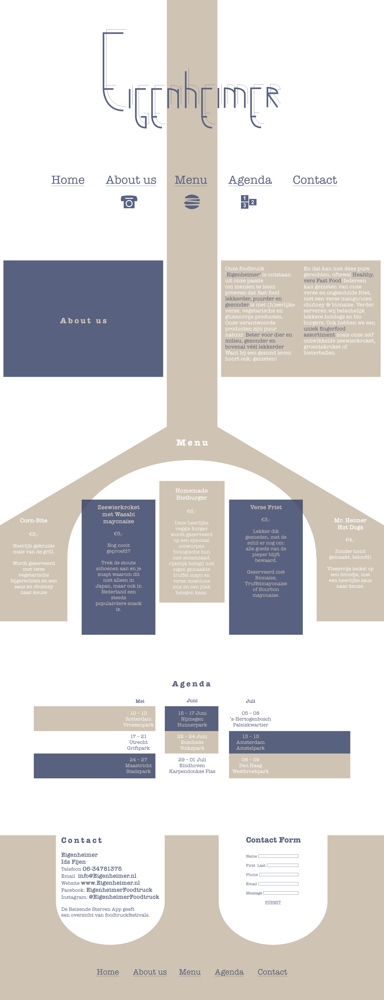

Algemeen
De opdrachtgever
Vormgeving - Communication and Multimedia Design (HvA)
Categorie
Vormgeving
De uitdaging
Eigenheimer is een vegetarische snackbar in een foodtruck. De doelgroep die zij hebben zijn culturele 50’ers en zij willen graag een onepager in de stijl van Berlage.
De strategie
Culturele 50’ers, een groep die niet snel hele wilde dingen zullen gaan doen. Maar wel van een beetje spanning houden, het liefst een beetje verborgen. Ze zijn echt benieuwd naar interessante feiten en weetjes, maar ongein laten ze liever aan zich voorbij gaan.
De oplossing
In de onepager zit de beurs van berlage verborgen. Bovenaan zie je het plafond, met de vierkante ruiten. Bij het menu zie je de schijdingslijn tussen het plafond en de muur. Daaronder komt de muur en onderaan zie je weerspiegeling van de onderkant van de muur in de vloer. Ik heb voor milde kleuren gekozen omdat dat de doelgroep vertegenwoordigd, de kleuren zijn echter niet saai en ook niet allerdaags. Ik heb gekozen voor een chique woordmerk om in de rust en elegantie te blijven van deze groep. Maar toch heeft het iets speels door de dunnere ‘stroke’ op de achtergrond.
Het resultaat
In het begin vond ik het lastig om een mooie flow door de onepager te krijgen. De verschillende delen hingen niet samen en daarmee waren het eigenlijk allemaal losse content-stukken onder elkaar. Door uiteindelijk de beurs van Berlage te gebruiken als structuur voor de website krijgt het een natuurlijke flow.